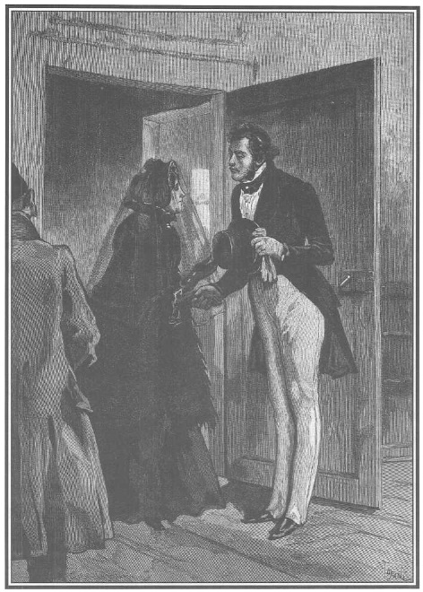

Chúng tôi đã miêu tả khuôn mặt duyên dáng, vẻ thanh lịch tuyệt vời, dáng điệu đáng yêu của ngài de Saint-Remy, mới từ trại Arnouville (gia sản của bà Công tước de Lucenay) đến hôm trước. Anh ta vừa ở đấy để tránh sự truy bắt của các nhân viên giám thủ thương mại Malicorne và Bourdin.
De Saint-Remy đột ngột vào văn phòng, chiếc mũ để nguyên trên đầu, dáng vẻ kiêu hãnh tự hào, lim dim đôi mắt và lên tiếng hỏi, vẻ xấc xược cao độ không thèm nhìn ai:
- Viên chưởng khế đâu rồi?
- Ông Ferrand làm việc trong phòng, - người thư ký thứ nhất trả lời - phiền ông đợi một chút, thưa ông, ông ấy có thể tiếp ông.
- Thế nào, đợi à?
- Nhưng, thưa ông…
- Không có nhưng gì cả, ông đến bảo ông ta là ông de Saint-Remy đã tới đây. Tôi rất lấy làm lạ là viên chưởng khế này lại bắt tôi chầu chực. Thật rõ là rách chuyện!
- Thưa ông, phiền ông sang phòng bên, - người thư ký thứ nhất nhắc lại - tôi sẽ lập tức báo cho ông Ferrand.
De Saint-Remy nhún vai đi theo viên thư ký.
Sau mười lăm phút đối với anh ta dài dằng dặc, chuyển từ bực mình sang giận dữ, de Saint-Remy được đưa vào phòng viên chưởng khế.
Không có gì lạ lùng hơn sự tương phản giữa hai người, cả hai đều là tín đồ của thuật xem tướng và thường quen phán đoán ngay từ cái nhìn đầu tiên đối với những người mà họ cần có quan hệ.
De Saint-Remy gặp Jacques Ferrand lần đầu tiên. Anh ta chú ý ngay đến khuôn mặt nhợt nhạt, cứng rắn, lạnh lùng, cặp mắt ẩn sau đôi mắt kính màu lục to tướng, vầng trán bị che lấp một nửa dưới cái mũ trùm đầu cũng bằng lụa đen.
Viên chưởng khế ngồi trước bàn làm việc, trên chiếc ghế bành bọc da, bên cạnh cái lò sưởi đã hỏng, đầy tro, trong đó còn hai mẩu củi cháy đen bốc khói. Những chiếc màn vải láng màu lục, gần như rách bươm móc vào các nan bằng sắt trên cửa sổ che các tấm kính phía dưới và để lọt vào căn phòng vốn đã tối một tia sáng nhợt nhạt và ảm đạm. Những giá nhiều ngăn gỗ đen chứa đầy những tấm bìa, trên dán nhãn; một vài ghế tựa bằng gỗ anh đào dại bọc nhung Utrecht vàng, một đồng hồ màu gụ, sàn lát gạch vuông vàng nhạt ẩm và lạnh lẽo, một bức trần nhiều kẽ nứt ngang chăng đầy mạng nhện, đấy là chính điện* của ông Ferrand.
Tiếng La-tinh trong nguyên bản: “sanctus sanctorum”: chính điện trong giáo đường Do Thái, dùng để chỉ những nơi cấm người phàm tục tới (ND).
Vị Tử tước chưa bước được hai bước trong căn phòng, chưa phát biểu một lời nào mà viên chưởng khế, chỉ mới biết tiếng anh ta, cũng đã thấy ác cảm rồi. Trước hết lão thấy ở anh này một đối thủ có hành động xảo quyệt, thứ nữa, chính vì Ferrand dáng vẻ hèn hạ và ti tiện nên lão không thích thấy ở người khác sự phong nhã, vẻ duyên dáng và tính thanh niên, nhất là một điệu bộ xấc xược tột cùng lại đi kèm theo những lợi thế trên.
Viên chưởng khế thường giả bộ thô bạo phũ phàng, thậm chí thô lỗ nữa đối với các khách hàng vốn thường chỉ thấy kính nể lão hơn vì những kiểu cách của dân quê vùng Danube. Lão quyết phải tăng cường hành động phũ phàng này với de Saint-Remy.
Anh này cũng chỉ mới nghe tiếng Jacques Ferrand, tưởng sẽ thấy ở lão một loại chưởng khế ngây ngô hoặc lố bịch. Tử tước thường hình dung những người trung thực như chuyện thần thoại, mà Jacques Ferrand theo lời đồn đại là một điển hình hoàn chỉnh dưới vẻ bề ngoài ngớ ngẩn.
Khác hẳn thế, vẻ mặt, cử chỉ của viên chưởng khế áp đặt cho Tử tước nỗi hận khó tả, nửa như sợ hãi, nửa như thù ghét, mặc dù anh ta không có lý do chính đáng nào để sợ hãi hoặc thù ghét lão. Bởi thế theo đúng tính cách quả quyết của mình, de Saint-Remy có phóng to thêm tính xỏ xiên và tính tự phụ quen thuộc của lão. Viên chưởng khế để nguyên chiếc mũ trùm trên đầu, vị Tử tước cũng để nguyên mũ và vừa đến cửa đã lớn tiếng chua chát:
- Chính thế, thật kỳ quặc, thưa ông, khi ông làm tôi phải cất công đến đây trong khi ông có thể cho người đến nhà tôi thu tiền trả những hối phiếu mà tôi đã ký nhận trả cho lão Badinot và chính vì những hối phiếu này mà cái lão kỳ cục ấy đã kiện tôi. Ông có cho tôi biết, đúng thế, ngoài ra ông có một việc rất quan trọng cần truyền đạt cho tôi nhưng như vậy ông không nên để tôi chờ đợi mười lăm phút đồng hồ trong phòng đợi của ông. Như thế không được lịch sự, ông ạ!
Lão Ferrand thản nhiên hoàn thành một con tính đang làm, ung dung quẹt ngòi bút trên miếng bọt biển thấm nước quấn quanh lọ mực sành đã sứt và quay về phía Tử tước với khuôn mặt lạnh lẽo bệch ra như màu đất, chiếc mũi ngắn và tẹt trên có cặp kính.
Người ta có thể nói đây là một cái đầu lâu mà những hốc mắt đã được thay thế bằng những con ngươi lớn bất động, màu lục.
Sau khi im lặng, ngắm nhìn kĩ càng vị Tử tước một lúc, viên chưởng khế hỏi, thô bạo và ngắn ngủn:
- Tiền đâu?
Sự lạnh lùng này làm de Saint-Remy phẫn nộ. Anh ta… anh ta… thần tượng của phụ nữ, ước muốn của nam giới, kiểu mẫu của xã hội thượng lưu Paris, người đấu đôi đáng gờm, thế mà không gây được chút ấn tượng nào đối với viên chưởng khế khốn nạn này, điều đó thật là tệ hại. Mặc dầu anh ta vẫn mặt đối mặt với Jacques Ferrand, niềm kiêu hãnh bên trong làm anh ta phẫn nộ.
- Hối phiếu đâu? - Ông ta hỏi cụt lủn.
Lấy đầu một ngón tay cứng như sắt, trên có lông đỏ, viên chưởng khế không trả lời mà gõ lên trên một chiếc ví da rộng đặt cạnh lão.
Quyết tâm cũng phải cộc lốc như thế, nhưng run lên vì căm phẫn, Tử tước rút ra khỏi túi áo redingote một cuốn nhật ký nhỏ bọc da Nga, bên ngoài lại khóa bằng những cặp móc vàng, rút ra bốn mươi tờ bạc một nghìn franc và đưa cho viên chưởng khế.
- Bao nhiêu? - Lão hỏi.
- Bốn mươi nghìn franc.
- Đưa đây.
- Đây, và đếm nhanh lên. Ông hãy làm công việc của ông, rồi trả hối phiếu cho tôi. - Tử tước vừa nói vừa sốt ruột ném bọc giấy bạc lên bàn.
Viên chưởng khế cầm tập giấy bạc, đứng dậy, nhìn kĩ các tờ bạc gần cửa sổ, lật đi lật lại từng tờ với sự chú ý rất tỉ mỉ, có thể nói xúc phạm nặng nề đến de Saint-Remy, đến nỗi anh này tái mặt đi vì giận dữ.
Viên chưởng khế như đoán được những ý nghĩ giày vò vị Tử tước, lắc đầu, quay nửa người về phía anh ta, nói với giọng khó tả:
- Cái đó thấy được ngay.
Lặng người đi một lúc, de Saint-Remy hỏi xẵng:
- Cái gì?
- Những tờ giấy bạc giả. - Viên chưởng khế trả lời và tiếp tục đem những tờ tiền lão cầm trong tay ra xem xét kĩ lưỡng.
- Căn cứ vào đâu ông đưa ra nhận xét này, hả ông?
Jacques Ferrand ngừng lại một lúc nhìn chòng chọc vào Tử tước qua cặp kính, rồi hơi khẽ nhún vai, lão lại tiếp tục kiểm kê các giấy tờ bạc, không thốt lên một lời nào.
- Này, ông chưởng khế, ông nên biết rằng khi tôi hỏi thì ông cũng phải trả lời chứ! - De Saint-Remy giận dữ lên tiếng trước sự im lặng của Jacques Ferrand.
- Những tờ kia là bạc thật! - Viên chưởng khế vừa nói vừa quay lại bàn làm việc, lão cầm lấy một tập nhỏ giấy dán tem trong đó có hai hối phiếu.
Sau đó lão đặt một tờ giấy bạc một nghìn franc và ba cuộn giấy một trăm franc trên hồ sơ giấy nợ rồi vừa nói với de Saint-Remy vừa lấy đầu ngón tay chỉ vào tiền và các chứng thư:
- Đây là số tiền còn lại của ông ở khoản bốn mươi nghìn franc, khách hàng của tôi đã ủy nhiệm tôi thu cả bảo kê khoản lệ phí phải nạp.
Vị Tử tước phải cố nén giận trong khi Jacques Ferrand xem xét lại mọi khoản. Đáng lẽ trả lời lão và cầm tiền còn lại, anh ta nói giọng run lên vì tức giận:
- Tôi muốn hỏi ông, tại sao ông lại bảo tôi là trong tập giấy bạc tôi đưa có những tờ giả?
- Tại sao à?
- Phải.
- Bởi vì tôi triệu tập ông đến đây vì một vụ giả mạo. - Rồi viên chưởng khế chĩa cặp kính lục vào Tử tước.
- Vụ giả mạo ấy liên quan gì đến tôi?
Sau một lúc im lặng, Ferrand nói với Tử tước, vẻ buồn rầu và nghiêm nghị:
- Ông có nhận thấy không, thưa ông, về những chức trách mà một người chưởng khế phải đảm nhiệm?
- Việc tính toán và các chức trách hoàn toàn đơn giản, thưa ông. Lúc nãy tôi có bốn mươi nghìn franc, bây giờ tôi chỉ còn một nghìn ba trăm franc.
- Ông rất hay đùa, thưa ông, tôi xin nói để ông rõ là một người chưởng khế, do chức nghiệp, ông ta thường biết những điều bí mật bỉ ổi.
- Sau đó thế nào, thưa ông?
- Ông ta luôn luôn buộc phải có quan hệ đối với những kẻ bất lương.
- Rồi sao nữa, thưa ông?
- Ông ta phải, trong chừng mực có thể, ngăn cản một người đáng tôn kính bị kéo xuống bùn đen.
- Tôi đây có gì dính dáng đến tất cả những cái đó?
- Cha ông đã để lại cho ông một cái tên đáng kính mà ông đã làm ô danh đấy, thưa ông.
- Tại sao ông dám nói thế?
- Không có sự quan tâm mà cái tên ấy gợi lên ở tất cả những người lương thiện, thay vì hôm nay được triệu tập tới đây, trước mặt tôi, giờ này ông đang phải đứng trước mặt quan dự thẩm.
- Tôi không hiểu ông nói gì.
- Cách đây hai tháng, ông đã tiêu trước, qua trung gian của một viên biện sự một hối phiếu năm mươi tám nghìn franc của nhà Meulaer và công ty ở Hambourg ký nhận trả cho một ông William Smith nào đó, và phải trả trong hạn ba tháng cho ông Grimaldi, chủ ngân hàng ở Paris.
- Thế thì sao?
- Hối phiếu ấy là giả.
- Điều đó không đúng…
- Hối phiếu ấy là giả! Nhà Meulaer chưa bao giờ ký hợp đồng với William Smith, họ không thừa nhận ông này.
- Thật thế ư? - De Saint-Remy kêu lên vừa ngạc nhiên vừa phẫn nộ. - Như vậy thì, thưa ông, tôi đã bị lừa một cách ghê gớm vì tôi đã nhận chứng khoán ấy bằng tiền mặt.
- Ở ai?
- Ở chính ông William Smith, nhà Meulaer trứ danh như thế kia mà. Bản thân tôi cũng biết rất rõ sự trung thực của ông William Smith nên tôi đã nhận hối phiếu ấy trả một món tiền ông ta nợ tôi.
- William Smith chưa bao giờ tồn tại. Đấy là một nhân vật tưởng tượng.
- Ông thóa mạ tôi đấy ư?
- Chữ ký của ông ta là giả, và tất cả mọi cái còn lại đều giả định như thế.
- Thưa ông, tôi quả quyết với ông là ông Smith tồn tại nhưng có lẽ tôi đã bị lừa gạt bởi một chuyện bội tín đê hèn.
- Chàng trai trẻ tội nghiệp!
- Ông hãy nói cụ thể hơn.
- Nói gọn lại, người được ký thác tín phiếu ấy hiện nay đã phải thừa nhận là ông phạm tội giả mạo.
- Thưa ông!
- Ông ta khẳng định có đầy đủ chứng cứ, hôm kia ông ta đến yêu cầu triệu tập tới đây và đề nghị trả lại ông hối phiếu giả này với điều kiện có sự dàn xếp. Cho tới đó tất cả đều là trung thực, từ đây trở đi thì không thế nữa, và tôi chỉ thông báo để ông nắm tình hình thôi. Ông ta đòi một trăm nghìn franc écu ngay hôm nay, hoặc nếu không được thì đúng trưa mai, nếu không việc giả mạo này sẽ được đệ lên viện công tố để xét xử.
- Thật là một điều xấu xa!
- Hơn nữa, một chuyện phi lý… ông phá sản, ông đã bị truy tố vì món tiền vừa đem trả cho tôi, tôi cũng không rõ nhờ đâu mà ông có được. Đó là điều tôi đã tuyên bố với người cầm phiếu thứ ba đó. Ông ta có cho tôi biết về việc ấy là: một bà quý tộc nào đó rất giàu có sẽ không để ông trong cảnh bối rối.
- Thôi đi ông. Thôi!
- Xấu xa nào thì có điều phi lý ấy! Đồng ý thế đấy!
- Vậy thì thưa ông, người ta muốn gì?
- Lợi dụng một cách xấu xa một hành vi xấu xa. Tôi đã ưng thuận cho ông biết lời đề nghị ấy, tuy vẫn lên án nó như một người lương thiện phải lên án nó. Bây giờ thì đó là việc của ông. Nếu ông có tội thì hãy chọn một bên là tòa đại hình, một bên là món tiền chuộc mà người ta đòi ông. Việc trao đổi của tôi hoàn toàn không chính thức mà tôi cũng không muốn nhúng tay thêm vào một công việc bẩn thỉu như thế. Người cầm phiếu thứ ba tên là ông Petit-Jean, nhà buôn dầu, ông ta ở trên bờ sông Seine, bến cảng de Billy, nhà số 10. Ông dàn xếp với ông ấy. Các ông xứng đáng để thỏa thuận với nhau nếu ông phạm tội giả mạo như ông ta khẳng định.
De Saint-Remy đã vào nhà Jacques Ferrand nói năng xấc xược, đầu ngẩng cao. Cho dẫu trong cuộc đời anh ta đã có một vài hành vi đáng hổ thẹn, ở anh ta vẫn còn một niềm tự hào nào đấy về dòng dõi, một lòng dũng cảm bẩm sinh, chưa bao giờ tiền hậu bất nhất. Lúc bắt đầu cuộc đối thoại, coi viên chưởng khế như một đối thủ không xứng đáng, anh ta chỉ giễu cợt lão.
Khi Jacques Ferrand đề cập đến việc giả mạo, Tử tước cảm thấy bị choáng.
Đến lượt mình, anh ta đã bị viên chưởng khế áp đảo.
Nếu không hoàn toàn giữ được sự tự chủ, anh ta đã không che giấu nổi ấn tượng kinh khủng mà sự phát hiện bất ngờ này gây nên cho mình, bởi nó có thể đem lại những hậu quả không lường được mà chính viên chưởng khế cũng không ngờ tới.
Sau một lúc im lặng và suy nghĩ, anh ta đành cam chịu nhẫn nhục. Một con người tự phụ như vậy, dễ cáu kỉnh như vậy, rất tự hào về lòng dũng cảm của mình, phải cầu khẩn một con người thô lỗ nói năng với mình một cách khá thô bạo bằng ngôn từ khắc khổ của lòng trung thực:
- Thưa ông, ông đã cho tôi một biểu hiện về sự quan tâm và rất cảm động, tôi rất tiếc lúc mới vào đã dùng những lời lẽ không được thuần nhã. - De Saint-Remy nói giọng thân tình.
- Tôi chẳng quan tâm một chút nào đến ông. - Viên chưởng khế ngắt lời một cách phũ phàng. - Cha ông là hiện thân của lòng danh dự, tôi không muốn thấy tên ông ấy ở tòa đại hình, chỉ có thế thôi.
- Thưa ông, tôi xin nhắc lại với ông là tôi không thể làm điều ô nhục mà người ta buộc tội tôi như thế.
- Ông sẽ trình bày việc ấy với ông Petit-Jean.
- Nhưng tôi xin thú thật, sự vắng mặt của ông Smith đã lợi dụng một cách xấu xa sự tin cậy của tôi.
- Lão Smith bỉ ổi.
- Sự vắng mặt của ông Smith làm tôi bối rối vô cùng. Tôi không có tội. Cho dẫu người ta buộc tội tôi, tôi sẽ chứng minh điều đó. Nhưng một sự buộc tội như vậy bao giờ cũng làm nhục một người phong nhã.
- Rồi sao nữa?
- Ông hãy rộng lòng dùng số tiền tôi vừa gửi ông để bồi thường phần nào cho người đang cầm hối phiếu trong tay.
- Số tiền này là của khách hàng tôi, không ai đụng tới được.
- Nhưng chỉ trong vài ba ngày tôi sẽ hoàn lại.
- Ông không thể làm như vậy được đâu.
- Tôi có nhiều nguồn lợi.
- Chẳng có gì đâu. Ít ra là có thể thừa nhận được. Đồ đạc trong nhà ông, ngựa xe của ông không còn thuộc quyền sở hữu của ông, ông nói thế… cái ấy đến với tôi có vẻ như một sự gian lận xấu xa.
- Ông thật nghiệt ngã đấy, thưa ông. Nhưng dẫu công nhận điều đó, còn lại cái gì tôi không thể đem bán lấy tiền được sao, trong một tình trạng nguy ngập đến tuyệt vọng như thế này? Tuy nhiên, tôi không thể từ giờ đến trưa mai tìm ra một trăm nghìn franc. Tôi tha thiết xin ông đem dùng số tiền tôi vừa đưa lại ông để rút giùm cái hối phiếu tai hại. Hay là ông giàu có như thế, ông ứng trước giùm cho tôi và đừng để tôi lâm vào một tình thế như thế này.
- Tôi ấy à? Ứng một trăm nghìn franc cho ông! Chà, ông điên đấy à?
- Thưa ông, tôi tha thiết khẩn cầu ông! Nhân danh cha tôi mà ông vừa nhắc đến, xin ông hãy có chút từ tâm để…
- Tôi nhân từ đối với những ai xứng đáng được thế! - Viên chưởng khế trả lời gay gắt. - Là người lương thiện, tôi rất ghét những quân lừa gạt, và tôi không hề phiền lòng khi thấy một trong những kẻ tốt mã không tín ngưỡng, chẳng lương tâm, báng bổ và bê tha, một dịp nào đó bị trói vào cột bêu tội nhân để làm gương cho kẻ khác. Nhưng mà tôi đã nghe mấy con ngựa của ông sốt ruột rồi đấy, ông Tử tước ạ. - Viên chưởng khế nói và mỉm cười để lộ ra những đầu răng đen của lão.
Giữa lúc ấy, có tiếng gõ cửa.
- Có việc gì đấy? - Ferrand hỏi.
- Bà Bá tước d’Orbigny. - Người thư ký thứ nhất trả lời.
- Đề nghị bà ta đợi một chút.
- Đây là mẹ kế của bà Hầu tước d’Harville. - De Saint-Remy lẩm bẩm.
- Vâng, thưa ông, bà ấy có hẹn gặp tôi.
- Đề nghị ông tuyệt đối không nhắc một tí gì đến việc này. - De Saint-Remy nói giọng hăm dọa.
- Tôi từng nói với ông là một viên chưởng khế cũng biết kín đáo như một vị linh mục nghe xưng tội.
Jacques Ferrand bấm chuông, người thư ký xuất hiện.
- Mời bà d’Orbigny vào! - Rồi lão nói với ông Tử tước. - Ông cầm lấy một nghìn ba trăm franc này, đó sẽ là món tiền trả nợ dần từng kỳ cho ông Petit-Jean đấy.

De Saint-Remy và bà d’Orbigny.
Bà d’Orbigny (trước đây là bà Roland) đi vào lúc de Saint-Remy ra, nét mặt căng thẳng vì giận dữ đã chịu nhịn nhục một cách vô ích trước viên chưởng khế.
- A, xin chào ông de Saint-Remy, - bà d’Orbigny mừng rỡ - đã rất lâu tôi chưa có dịp gặp lại ông.
- Thật thế, thưa bà, từ sau đám cưới ông bà d’Harville mà tôi là nhân chứng, tôi chưa có hân hạnh gặp lại bà. - De Saint-Remy vừa đáp lại vừa nghiêng mình và đột nhiên nét mặt lại trở nên nhã nhặn và tươi tỉnh. - Từ ngày ấy đến giờ bà luôn luôn ở Normandie đấy nhỉ?
- Thế đấy, thưa ông. Ông d’Orbigny bây giờ chỉ muốn sống ở nông thôn, và điều ông ấy thích, tôi cũng thích. Bởi thế ông thấy đấy, tôi đã trở thành một phụ nữ tỉnh lẻ thực sự. Tôi không trở lại Paris từ ngày cưới cô con chồng thân yêu của tôi với ông d’Harville tuyệt diệu ấy. Ông có thường gặp ông ấy không?
- D’Harville trở nên rất cô độc và u sầu. Người ta ít gặp ông trong giới thượng lưu. - De Saint-Remy trả lời với một thoáng sốt ruột bởi cuộc trao đổi này làm anh ta khó chịu, vì vừa không đúng lúc vừa vì viên chưởng khế có vẻ như thấy thế thì thích thú lắm.
Nhưng mẹ kế của bà d’Harville, say sưa gặp được con người phong nhã này, đâu chịu buông tha ngay con mồi của bà ta.
- Thế còn cô con chồng thân yêu của tôi, - bà ta hỏi thêm - tôi hy vọng rằng cô ta không đến nỗi cô độc như chồng chứ?
- Bà d’Harville thì lại rất hợp thời thượng và luôn luôn được săn đón như một người đàn bà đẹp thường được thế. Nhưng tôi sợ, thưa bà, đã làm mất thì giờ của bà và…
- Chẳng phải thế đâu, tôi xin đảm bảo với ông như thế. Thật vô cùng may mắn cho tôi được gặp một người phong nhã nhất trong những người phong nhã, ông hoàng về thời trang, trong mười phút tôi được biết tình hình Paris như chưa bao giờ rời khỏi thành phố ấy. Thế còn ông de Lucenay thân mến của ông, người đã cùng ông là nhân chứng cho cuộc hôn nhân của ông d’Harville?
- Vẫn độc đáo hơn bao giờ hết. Ông ta sang phương Đông và trở về rất đúng lúc để sáng qua nhận một nhát gươm, rất may là không gây phiền phức gì cho ông ta cả.
- Ông Công tước tội nghiệp ấy! Thế bà vợ vẫn luôn luôn xinh đẹp và làm say lòng người chứ?
- Thưa bà, bà đã rõ, tôi có vinh dự là một trong những người bạn thân của ông ấy, sự biểu lộ của tôi về vấn đề e kém chính xác. Xin phiền bà, lúc trở về Aubiers, đừng quên nhắc đến tôi với ông d’Orbigny.
- Ông ấy sẽ rất cảm động, tôi xin cam đoan với ông như thế, về kỷ niệm đáng quý của ông, bởi vì ông ấy luôn luôn hỏi thăm tin tức về ông, về những thắng lợi của ông. Ông ấy thường nói là ông làm ông ấy nhớ tới Công tước de Lauzun.
- Chỉ một sự so sánh ấy cũng đã là cả một lời khen. Nhưng rất không may cho tôi là nó do rộng lượng mà có hơn là thực tế đúng như vậy. Xin chào bà, vì tôi không dám hy vọng bà có thể dành cho tôi vinh dự để tiếp tôi trước lúc bà ra đi.
- Tôi sẽ rất phiền lòng khi thấy ông quá bộ tới thăm tôi. Trong ít ngày, tôi phải tạm trú trong một khách sạn có sẵn đồ đạc, nhưng nếu hè này hoặc thu này, khi đi trên con đường qua nơi chúng tôi ở để đến một tòa lâu đài rất hợp thời trang mà những con người tuyệt vời đang giành nhau niềm thích thú để được tiếp ông, xin ông hãy dành cho chúng tôi lấy một vài ngày, chỉ đơn thuần muốn thấy sự tương phản và để ông nghỉ ngơi tại nhà các bà phụ nữ nông thôn tội nghiệp để tránh sự buồn nản về cuộc sống ở các lâu đài rất phong nhã và náo nhiệt, bởi vì ông đi tới đâu là ở đấy có hội hè.
- Thưa bà…
- Tôi không cần trình bày cùng ông là ông d’Orbigny và tôi, chúng tôi sẽ sung sướng thế nào khi được tiếp ông. Nhưng thôi, xin kính chào ông, tôi e rằng con người cục cằn, từ thiện, - bà ta chỉ viên chưởng khế - sẽ sốt ruột vì những câu chuyện phiếm của chúng ta.
- Trái lại, thưa bà, trái lại. - Ferrand nói với một giọng điệu càng làm tăng thêm nỗi tức giận cố nén của de Saint-Remy.
- Hãy thừa nhận rằng ông Ferrand là một con người ghê gớm. - Bà d’Orbigny lại nói, làm ra vẻ ngây thơ. - Nhưng hãy coi chừng vì có điều may là ông ấy được ủy thác những công việc của ông. Ông ấy sẽ quở trách ông một cách dữ dội, thật là một con người tàn nhẫn. Nhưng mà tôi nói cái gì thế này? Trái lại, một con người tuyệt vời như ông, được ông Ferrand làm chưởng khế… đây quả là một chứng chỉ tu tỉnh vì mọi người đều rõ ông ấy không bao giờ để cho khách hàng chi tiêu quá đáng, bằng không thì ông ấy sẽ tính sổ sách trả lại tiền. Ôi, ông ấy không muốn là chưởng khế của tất cả mọi người.
Rồi bà ta quay sang nói với Ferrand:
- Thưa ông, ông có biết không, đối với một con người rất chặt chẽ về nguyên tắc như ông thì đây là một sự cải biến tuyệt vời mà ông đã thực hiện, làm cho con người phong nhã tiêu biểu nhất, ông hoàng của thời trang trở nên khôn ngoan.
- Thật đúng là một sự cải biến… Ông Tử tước ra khỏi phòng tôi khác hẳn lúc mới vào.
- Khi tôi nói là ông đã tạo ra những điều kỳ diệu, điều đó không có gì là lạ. Ông là một bậc thánh!
- A, thưa bà, bà quá khen! - Lão Ferrand trân trọng đáp.
De Saint-Remy kính cẩn chào bà d’Orbigny, rồi từ biệt viên chưởng khế. Muốn một lần nữa gợi lòng thương hại của lão, anh ta nói với lão bằng một giọng thanh thoát những vẫn cứ lộ ra một nỗi lo lắng sâu xa:
- Thế nhất định, thưa ông Ferrand thân mến, ông không ưng thuận điều mà tôi yêu cầu ông?
- Lại một việc chi tiêu huyễn hoặc nào đấy, hẳn thế. Phải thẳng tay, con người chặt chẽ về nguyên tắc thân mến của tôi. - Bà d’Orbigny vừa nói vừa cười.
- Ông nghe thấy đấy, thưa ông, tôi không thể làm trái ý một quý bà xinh đẹp như vậy.
- Thưa ông Ferrand thân mến, chúng ta hãy nói nghiêm chỉnh về những vấn đề nghiêm chỉnh hơn nhiều. Thế nhất định ông từ chối tôi? - Ông Tử tước hỏi với một nỗi lo sợ không còn giấu giếm được.
Viên chưởng khế cũng khá tàn nhẫn khi tỏ ra hơi ngần ngại. Ông de Saint-Remy lại có chút hy vọng.
- Thế nào, con người sắt, ông nhượng bộ ư? - Bà mẹ kế của bà d’Harville vừa nói vừa cười. - Thì ra ông cũng thấy cái thú của điều không thể cưỡng nổi đấy nhỉ.
- Thưa bà, quả thế, tôi sắp sửa nhượng bộ như bà nói, nhưng bà làm cho tôi phát ngượng vì đã nhu nhược. - Lão Ferrand nói.
Rồi quay sang Tử tước, lão nói với anh chàng này một cách ý tứ để mà hiểu cho hết ý lão:
- Này, nghiêm chỉnh đấy nhé! Không thể như thế được. Tôi không thể nào cam lòng thấy vì do ý thích thất thường của ngài lại xử sự một cách dại dột như thế. Thưa ngài Tử tước, tôi tự coi mình như là kẻ đỡ đầu cho thân chủ của mình, tôi không có gia đình nào khác và tôi tự cho là mình đồng lõa với những điều rồ dại mà tôi nhắm mắt để cứ mặc họ làm.
- Ôi, con người nguyên tắc mới khiếp chứ! Thấy chưa? - Bà d’Orbigny bình phẩm.
- Vả chăng, cứ gặp ông Petit-Jean mà xem. Ông ta cũng nghĩ như tôi, chắc chắn là thế, hoàn toàn như tôi, không thể khác. Ông ta sẽ nói với ngài… “không thể được”!
Tử tước de Saint-Remy thất vọng đi ra.
Sau một hồi suy nghĩ, anh ta bảo: “Phải thế thôi”, rồi nói với gia nhân đang mở sẵn cửa:
- Đến biệt thự de Lucenay.
Trong lúc de Saint-Remy đến nhà nữ Công tước, chúng tôi xin để quý vị độc giả chứng kiến cuộc trao đổi giữa lão Ferrand và bà mẹ ghẻ của nữ Hầu tước d’Harville.